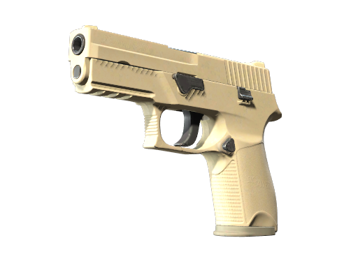
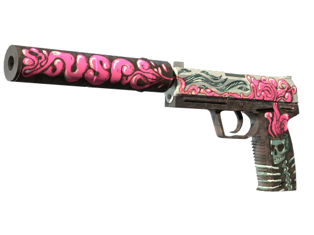

Outcome card
What came out of a round: its published chance over the skin, the skin large in its tier's ring, the gun with its wear and the skin's name, the value in coins, and the multiple of the open's price on a tab at the foot. Two to five in a row are the smaller batch, each with its own Sell. Everything on this page is drawn by design/system/components/outcome-card.css through index.css; the skins, chances and values are samples.
Anatomy
 ★ Karambit, wear FNTiger Tooth1940.00 coins×156.45 of the price
★ Karambit, wear FNTiger Tooth1940.00 coins×156.45 of the price P250, wear BSAsiimov9.60 coins×0.77 of the price
P250, wear BSAsiimov9.60 coins×0.77 of the price| Part | Class or element | What to change there |
|---|---|---|
| The wrapper (the molecule's own) | .outcome, --r1 to --r7, --batch | the tier (--tier, from the ladder; the lit steps for 4 and 5, as the drop card draws them); the foot room and the card's sizes (--outcome-*) |
| The card (the molecule's own) | .outcome__card | 300 by 330 (a batch 220 by 270); the tier's wash, its glow, the short bar at the top edge, and the band of light that crosses it once when .is-on is set |
| The chance (the molecule's own) | .outcome__odds | the published chance over the skin: the figure in a step of the tier, the word under it; hidden on a batch under 600px |
| The skin in its ring | a Media slot (.media--skin .outcome__art) holding .outcome__plate, the .outcome__ring svg and the picture | the plate's fill and the ring's gradient and glow, light from the top left; the picture a little larger than its frame; the plate and the ring are the card's own, the slot is the atom's |
| The names (the molecule's own) | .outcome__name, __w, __wear, __s | the gun, then the wear after a dot in white, then the skin's name at 22px; a word for a screen reader in .outcome__sr |
| The value | a Figure, .fig--win, placed by .outcome__v, with the coin | the grid area and the coin's size; the figure's 30px is the atom's variant |
| The multiple's tab (the molecule's own) | .outcome__x, .is-up | a plate that keeps its colour in both themes: dark navy, green on a gain; the multiple of the open's price in tabular figures |
| A batch's Sell | a Button, .button--ghost .button--s .outcome__sell | only its place under the card; the Button keeps its size and states |
Variants and sizes
Three axes. Each carries its rule, so the next screen picks by the rule instead of finding a reason again.
- Tier = data, set by the drop. A modifier from
--r1(rarest) to--r7sets--tier; the wash, the bar, the ring and the chance's figure follow. The card never decides its grade. - Content = one round or a batch. One round is the large card with no act of its own: the commit block carries Sell and Open again. A batch of two to five is the smaller card (
--batch), each with its own Sell under it. - Gain or not = the tab, never a sign. The tab is green when the item is worth more than the open (
.is-up), quiet otherwise. The card draws the item and its value large in both; it carries no net figure, no minus and no red. The net of a round belongs to the commit block, on a gain only (D-219, D-221), so a lower roll is told by the item, its value and the quiet tab, and the card draws no loss figure. - Width = the stage's. The card is 300px and never wider; in a batch it is 92% of its cell up to 220px. On a phone a single card's art narrows to 220px and a batch's card shortens to 190px.
Tier, in the batch size
The seven steps, shown at the batch's size so they fit the page; the tier works the same on both.
★ Karambit, wear FNTiger Tooth12.40 coins×1.00 of the price AK-47, wear FTRedline12.40 coins×1.00 of the price
AK-47, wear FTRedline12.40 coins×1.00 of the price M4A1-S, wear FTHyper Beast12.40 coins×1.00 of the price
M4A1-S, wear FTHyper Beast12.40 coins×1.00 of the price Glock-18, wear FNWater Elemental12.40 coins×1.00 of the priceP250, wear BSAsiimov12.40 coins×1.00 of the price
Glock-18, wear FNWater Elemental12.40 coins×1.00 of the priceP250, wear BSAsiimov12.40 coins×1.00 of the price
P250, wear BSSand Dune12.40 coins×1.00 of the price
USP-S, wear MWCortex12.40 coins×1.00 of the priceA batch of three
AK-47, wear FTRedline21.40 coins×1.73 of the priceP250, wear BSAsiimov9.60 coins×0.77 of the priceGlock-18, wear FNWater Elemental4.20 coins×0.34 of the price| Form | Measured |
|---|---|
| One round, the card | |
| A batch, the card | |
| The multiple's tab, one round | |
| The multiple's tab, batch |
The gap between the coin and the figure is the Figure's 8px on one round, 6px on a batch and 4px on a batch on a phone, as the case screen draws them.
When to use
Once a round has landed, to say what came out: the item, its published chance, its value and how that stands against the price. The published chance is on the card because it is what answers the doubt people actually record (design principle 1), and the value is the number the person is about to act on, cost and worth legible at the moment of acting (design principle 3). The words say what happened and nothing about the feeling: "chance on this case", "of the price" (microcopy 3.3-12, 3.3-62). A result the player did not see land, an interrupted open, is wired as an outcome from its markup and reads the same.
Rule and anti-rule
Use it
The case screen at its outcome: one card after one open, or two to five side by side after a batch, each batch card with its Sell under it. The drop sets the tier; the product sets .is-on when the card lands.
Take another component
A skin the person holds, with acts, is the Item card. An item in a case's drop table, with chance and tickets, is the Drop card. A win in the live strip is the Recent drop card. An item on its way to Steam is the Withdraw item. The round's sums and its Sell all are the Button and the Figure of the commit block, not part of this card.
States
No states: it is not interactive. A batch's Sell is the Button and keeps the Button's own states (its page). The product sets .is-on when the prize lands and a band of light crosses the card once; the keyframes that draw it, outcome-foil, are shared with the account head and declared once, at the end of this component's file. With reduced motion the band is off.
In the code
| Token | Kind | Dark | Light |
|---|
Read live from tokens.css. Two component tokens, both for the multiple's tab, which keeps its dark plate in both themes: --outcome-tab-edge (the hairline round it) and --outcome-tab-up-ink (its words on a gain); the roles of the same values, --bg-track and --text-up, turn navy and deep green in the light theme, which would vanish on a plate that stays dark. Four colour primitives are read directly, all in this block only and waiting for step 9: --color-tab, --color-up-tab, --shadow-outcome, --shadow-up-tab. Geometry, type and motion come straight from the primitives.
File: design/system/components/outcome-card.css, loaded by design/system/index.css in the molecules' group.
<div class="outcome outcome--r5 is-on"><div class="outcome__card"> <span class="outcome__odds"><b>32.910 %</b> <span>chance<span class="outcome__sr"> on this case</span></span></span> <span class="media media--skin outcome__art"><span class="outcome__plate"></span><svg class="outcome__ring">...</svg><img src="..." alt=""></span> <span class="outcome__name"><span class="outcome__w">P250<span class="outcome__wear">BS</span></span><b class="outcome__s">Asiimov</b></span> <span class="fig fig--win outcome__v"><span class="fig__v"><i class="icon icon--coin"></i>9.60</span></span> <span class="outcome__x">×0.77</span></div></div>
Stands on: the case screen, at its outcome: ?land=k for a gain, ?land=8 for a lower roll; press Open once signed in. Until step 8 that screen still reads kit.css; step 6 moves its markup onto this file's forms (row 28 for the value).